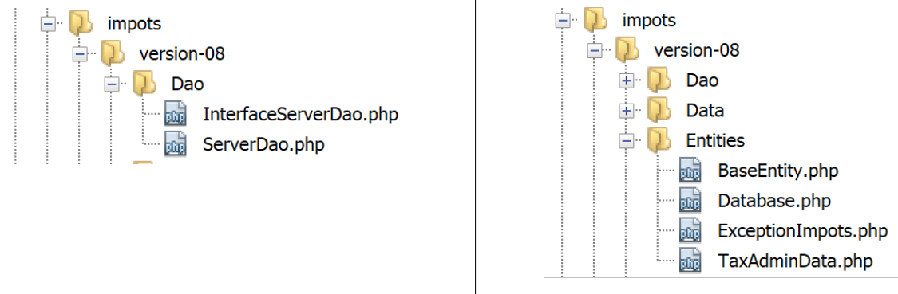
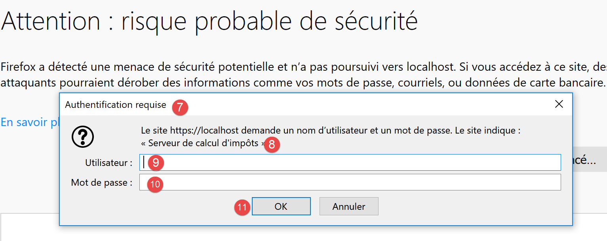
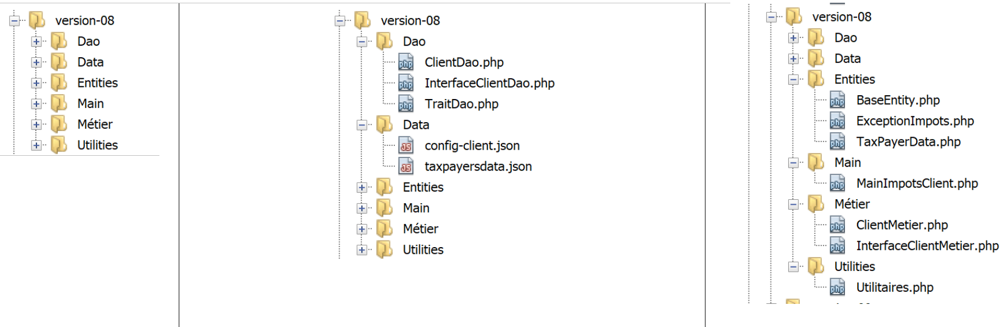

18. Ejercicio práctico – version 8
Vamos a retomar la aplicación de ejemplo – version 5 (párrafo enlace) y la convertiremos en una aplicación cliente/servidor.
18.1. Introducción
La arquitectura de version 5 era la siguiente:

- la capa denominada [dao] (Data Access Objects) se encarga de las comunicaciones con la base de datos MySQL y el sistema de archivos local;
- la capa denominada [métier] realiza el cálculo del impuesto;
- el script principal es el director de orquesta: instancia las capas [dao] y [métier] y, a continuación, se comunica con la capa [métier] para realizar las tareas necesarias;
Vamos a migrar esta arquitectura a la siguiente arquitectura cliente/servidor:

- En [2], recuperaremos la capa [dao] de la version 5 eliminándole los métodos de acceso al sistema de archivos local. Estos métodos se migrarán a la capa [dao] del cliente [6, 7];
- en [3], la capa [métier] seguirá siendo la de version 5 sin sus métodos [executeBatchImpôts, saveResults], que se migran a la capa [dao] [7] del cliente ;
- en [4], hay que escribir el script del servidor: deberá:
- crear las capas [métier] y [dao] [3, 2] ;
- interactuar con el script del cliente [5, 7];
- en [7], hay que escribir la capa [dao] del cliente:
- será un cliente HTTP del script del servidor [4, 5];
- tomará los métodos de acceso al sistema de archivos local de la capa [dao] de la version 5;
- En [8], la capa [métier] del cliente respetará la interfaz [InterfaceMetier] de la version 5. Sin embargo, su implementación será diferente. En version 5, la capa [métier] realizaba el cálculo del impuesto. Aquí, es la capa [métier] del servidor la que realiza este cálculo. Por lo tanto, la capa [métier] llamará a la capa [dao] [7] para comunicarse con el servidor y solicitarle que calcule el impuesto;
- en [9], el script de consola deberá instanciar las capas [dao, métier] del cliente e iniciar su ejecución;
18.2. El servidor
Nos interesa la parte del servidor de la aplicación.

Esta arquitectura se implementará mediante los siguientes scripts:

18.2.1. Las entidades intercambiadas entre las capas

Las entidades intercambiadas entre las capas son las de la version 5 descritas en el apartado enlace.
18.2.2. La capa [dao]

La capa [dao] implementa la siguiente interfaz [InterfaceServerDao]:
<?php
// espacio de nombres
namespace Application;
interface InterfaceServerDao {
// lectura de los datos de la administración tributaria
public function getTaxAdminData(): TaxAdminData;
}
- línea 9: el método [getTaxAdminData] recupera los datos de la administración tributaria de una base de datos;
La interfaz [InterfaceServerDao] está implementada por la siguiente clase [ServerDao]:
<?php
// espacio de nombres
namespace Application;
// definición de una clase ImpotsWithDataInDatabase
class ServerDao implements InterfaceServerDao {
// el objeto de tipo TaxAdminData que contiene los datos de los tramos impositivos
private $taxAdminData;
// el objeto de tipo [Database] que contiene las características de la BD
private $database;
// constructor
public function __construct(string $databaseFilename) {
// se guarda la configuración JSON de la base de datos
$this->database = (new Database())->setFromJsonFile($databaseFilename);
// se prepara el atributo
$this->taxAdminData = new TaxAdminData();
try {
// se abre la conexión a la base de datos
$connexion = new \PDO($this->database->getDsn(), $this->database->getId(), $this->database->getPwd());
// se desea que, ante cada error de SGBD, se lance una excepción
$connexion->setAttribute(\PDO::ATTR_ERRMODE, \PDO::ERRMODE_EXCEPTION);
// se inicia una transacción
$connexion->beginTransaction();
// se rellena la tabla de tramos impositivos
$this->getTranches($connexion);
// se rellena la tabla de constantes
$this->getConstantes($connexion);
// se finaliza la transacción con éxito
$connexion->commit();
} catch (\PDOException $ex) {
// ¿Hay alguna transacción en curso?
if (isset($connexion) && $connexion->inTransaction()) {
// la transacción finaliza con un error
$connexion->rollBack();
}
// se devuelve la excepción al código llamante
throw new ExceptionImpots($ex->getMessage());
} finally {
// se cierra la conexión
$connexion = NULL;
}
}
// lectura de los datos de la base
private function getTranches($connexion): void {
…
}
// lectura de la tabla de constantes
private function getConstantes($connexion): void {
…
}
// devuelve los datos que permiten calcular el impuesto
public function getTaxAdminData(): TaxAdminData {
return $this->taxAdminData;
}
}
Este código se ha presentado en el apartado enlace.
18.2.3. La capa [métier]
La capa [métier] implementa la siguiente interfaz [InterfaceServerMetier]:
<?php
// espacio de nombres
namespace Application;
interface InterfaceServerMetier {
// cálculo de los impuestos de un contribuyente
public function calculerImpot(string $marié, int $enfants, int $salaire): array;
}
La interfaz [InterfaceServerMetier] está implementada por la siguiente clase [ServerMetier]:
<?php
// espacio de nombres
namespace Application;
class ServerMetier implements InterfaceServerMetier {
// capa Dao
private $dao;
// datos de la administración tributaria
private $taxAdminData;
//---------------------------------------------
// configurar capa [dao]
public function setDao(InterfaceServerDao $dao) {
$this->dao = $dao;
return $this;
}
public function __construct(InterfaceServerDao $dao) {
// se almacena una referencia en la capa [dao]
$this->dao = $dao;
// se recuperan los datos que permiten el cálculo del impuesto
// el método [getTaxAdminData] puede lanzar una excepción ExceptionImpots
// se deja que se transmita al código llamante
$this->taxAdminData = $this->dao->getTaxAdminData();
}
// cálculo del impuesto
// --------------------------------------------------------------------------
public function calculerImpot(string $marié, int $enfants, int $salaire): array {
…
// resultado
return ["impôt" => floor($impot), "surcôte" => $surcôte, "décôte" => $décôte, "réduction" => $réduction, "taux" => $taux];
}
// --------------------------------------------------------------------------
private function calculerImpot2(string $marié, int $enfants, float $salaire): array {
…
// resultado
return ["impôt" => $impôt, "surcôte" => $surcôte, "taux" => $coeffR[$i]];
}
// revenuImposable=salarioAnual-desgravación
// la deducción tiene un mínimo y un máximo
private function getRevenuImposable(float $salaire): float {
…
// resultado
return floor($revenuImposable);
}
// calcula una posible reducción
private function getDecôte(string $marié, float $salaire, float $impots): float {
…
// resultado
return ceil($décôte);
}
// calcula una posible reducción
private function getRéduction(string $marié, float $salaire, int $enfants, float $impots): float {
..
// resultado
return ceil($réduction);
}
}
Este código ya se ha visto y comentado en el apartado enlace de version 1. Su objeto version con una base de datos se ha presentado en el apartado enlace.
18.2.4. El script del servidor

El script del servidor implementa la capa [web] [4]. El script [impots-server] se configura mediante el siguiente archivo jSON [config-server.json]:
{
"rootDirectory": "C:/myprograms/laragon-lite/www/php7/scripts-web/impots/version-08",
"databaseFilename": "Data/database.json",
"taxAdminDataFileName": "Data/taxadmindata.json",
"relativeDependencies": [
"/Entities/BaseEntity.php",
"/Entities/ExceptionImpots.php",
"/Entities/TaxAdminData.php",
"/Entities/Database.php",
"/Dao/InterfaceServerDao.php",
"/Dao/ServerDao.php",
"/Métier/InterfaceServerMetier.php",
"/Métier/ServerMetier.php"
],
"absoluteDependencies": ["C:/myprograms/laragon-lite/www/vendor/autoload.php"],
"users": [
{
"login": "admin",
"passwd": "admin"
}
]
}
- línea 1: la carpeta raíz desde la que se medirán las rutas de los archivos;
- línea 2: el archivo jSON de configuración de la base de datos MySQL;
- línea 3: el archivo jSON con los datos de la administración tributaria;
- líneas 5-14: los archivos de la aplicación;
- línea 15: la dependencia necesaria de las bibliotecas de terceros, en este caso Symfony;
- líneas 16-20: la tabla de usuarios autorizados a utilizar la aplicación;
Los archivos jSON y [database.json, taxadmindata.json] son los de version 5 descritos en el apartado enlace.
El script [impots-server] implementa la capa [web] de la siguiente manera:
<?php
// cumplimiento estricto de los tipos declarados de los parámetros de las funciones
declare (strict_types=1);
// espacio de nombres
namespace Application;
// gestión de errores mediante PHP
//ini_set("display_errors", "0");
//
// ruta del archivo de configuración
define("CONFIG_FILENAME", "Data/config-server.json");
// se recupera la configuración
$config = \json_decode(file_get_contents(CONFIG_FILENAME), true);
// se incluyen las dependencias necesarias para el script
$rootDirectory = $config["rootDirectory"];
foreach ($config["relativeDependencies"] as $dependency) {
require "$rootDirectory$dependency";
}
// dependencias absolutas (bibliotecas de terceros)
foreach ($config["absoluteDependencies"] as $dependency) {
require "$dependency";
}
// definición de constantes
define("DATABASE_CONFIG_FILENAME", $config["databaseFilename"]);
//
// dependencias de Symfony
use \Symfony\Component\HttpFoundation\Response;
use \Symfony\Component\HttpFoundation\Request;
// preparación de la respuesta del servidor JSON
$response = new Response();
$response->headers->set("content-type", "application/json");
$response->setCharset("utf-8");
// se recupera la solicitud actual
$request = Request::createFromGlobals();
// autenticación
$requestUser = $request->headers->get('php-auth-user');
$requestPassword = $request->headers->get('php-auth-pw');
// ¿existe el usuario?
$users = $config["users"];
$i = 0;
$trouvé = FALSE;
while (!$trouvé && $i < count($users)) {
$trouvé = ($requestUser === $users[$i]["login"] && $users[$i]["passwd"] === $requestPassword);
$i++;
}
// se establece el código de estado de la respuesta
if (!$trouvé) {
// no encontrado - código 401
$response->setStatusCode(Response::HTTP_UNAUTHORIZED);
$response->headers->add(["WWW-Authenticate" => "Basic realm=" . utf8_decode("\"Serveur de calcul d'impôts\"")]);
// mensaje de error
$response->setContent(\json_encode(["réponse" => ["erreur" => "Echec de l'authentification [$requestUser, $requestPassword]"]], JSON_UNESCAPED_UNICODE));
$response->send();
// fin
exit;
}
// tenemos un usuario válido - se comprueban los parámetros recibidos
$erreurs = [];
// deben ser tres parámetros GET
$method = strtolower($request->getMethod());
$erreur = $method !== "get" || $request->query->count() != 3;
// ¿error?
if ($erreur) {
$erreurs[] = "Méthode GET requise avec les seuls paramètres [marié, enfants, salaire]";
}
// se recupera el estado civil
if (!$request->query->has("marié")) {
$erreurs[] = "paramètre marié manquant";
} else {
$marié = trim(strtolower($request->query->get("marié")));
$erreur = $marié !== "oui" && $marié !== "non";
// ¿error?
if ($erreur) {
$erreurs[] = "paramètre marié [$marié] invalide";
}
}
// se recupera el número de hijos
if (!$request->query->has("enfants")) {
$erreurs[] = "paramètre enfants manquant";
} else {
$enfants = trim($request->query->get("enfants"));
// el número de hijos debe ser un número entero >=0
$erreur = !preg_match("/^\d+$/", $enfants);
// ¿Error?
if ($erreur) {
$erreurs[] = "paramètre enfants [$enfants] invalide";
}
}
// se recupera el salario anual
if (!$request->query->has("salaire")) {
$erreurs[] = "paramètre salaire manquant";
} else {
// el salario debe ser un número entero >=0
$salaire = trim($request->query->get("salaire"));
$erreur = !preg_match("/^\d+$/", $salaire);
// ¿Error?
if ($erreur) {
$erreurs[] = "paramètre salaire [$salaire] invalide";
}
}
// ¿Hay otros parámetros en la consulta?
foreach (\array_keys($request->query->all()) as $key) {
// ¿Parámetro válido?
if (!\in_array($key, ["marié", "enfants", "salaire"])) {
$erreurs[] = "paramètre [$key] invalide";}
}
// ¿Errores?
if ($erreurs) {
// se envía un código de error 400 al cliente
$response->setStatusCode(Response::HTTP_BAD_REQUEST);
$response->setContent(json_encode(["réponse" => ["erreurs" => $erreurs]], JSON_UNESCAPED_UNICODE));
$response->send();
exit;
}
// tenemos todo lo necesario para trabajar
// creación de la arquitectura del servidor
$msgErreur = "";
try {
// creación de la capa [dao]
$dao = new ServerDao($config["databaseFilename"]);
// creación de la capa [métier]
$métier = new ServerMetier($dao);
} catch (ExceptionImpots $ex) {
// se observa el error
$msgErreur = utf8_encode($ex->getMessage());
}
// ¿error?
if ($msgErreur) {
// se envía un código de error 500 al cliente
$response->setStatusCode(Response::HTTP_INTERNAL_SERVER_ERROR);
$response->setContent(\json_encode(["réponse" => ["erreur" => $msgErreur]], JSON_UNESCAPED_UNICODE));
$response->send();
exit;
}
// cálculo del impuesto
$result = $métier->calculerImpot($marié, (int) $enfants, (int) $salaire);
// se devuelve la respuesta
$response->setContent(json_encode(["réponse" => $result], JSON_UNESCAPED_UNICODE));
$response->send();
Comentarios
- línea 16: se utiliza el archivo de configuración;
- líneas 18-26: se cargan todas las dependencias;
- línea 29: el nombre del archivo [database.json];
- líneas 32-33: se declaran las clases de las bibliotecas de terceros que se van a utilizar;
- líneas 36-38: se prepara una respuesta jSON;
- líneas 40-52: se comprueba que el usuario que realiza la solicitud forma parte de los usuarios autorizados;
- líneas 54-63: si no es así, se envía el código HTTP 401, que indica un denegación de acceso. Al recibir este código y el encabezado HTTP [WWW-Authenticate => Basic realm=], la mayoría de los navegadores muestran una ventana de autenticación en la que se invita al usuario a autenticarse;
- línea 59: la respuesta jSON del servidor explica la causa del error. Todas las respuestas del servidor serán la cadena jSON de una tabla [‘réponse’=>’qq chose’];
- líneas 64-117: se comprueba la validez de la solicitud:
- una solicitud GET con exactamente tres parámetros;
- un parámetro [marié] cuyo valor debe ser «sí» o «no»;
- un parámetro [enfants] cuyo valor debe ser un entero >=0;
- un parámetro [salaire] cuyo valor debe ser un entero >=0;
- línea 65: cada vez que se detecta un error, se añade un mensaje de error a la tabla [$erreurs];
- líneas 120-126: si hay un error, se envía el código HTTP [400 Bad Request] al cliente (línea 122);
- línea 123: la respuesta jSON del servidor explica la causa del error;
- a partir de la línea 132, todo ha sido verificado. Se pueden instanciar las capas [dao, métier]. Esta instanciación tiene un coste y solo debe realizarse si se tiene la certeza de que la solicitud es válida;
- líneas 130-138: se crea la arquitectura del servidor. La construcción de la capa [dao] puede lanzar una excepción de tipo [ExceptionImpots]. Si se produce esta excepción, se registra el error;
- líneas 135-138: si se ha producido una excepción, se envía el código HTTP 500 al cliente. Este código significa que el servidor ha fallado;
- línea 143: la respuesta explica la causa del error;
- línea 148 : el cálculo del impuesto se delega a la capa [métier];
- líneas 150-151: envío de la respuesta;
Probemos este script con un navegador. Solicitemos el URL seguro [https://localhost:443/php7/scripts-web/impots/version-08/impots-server.php?marié=oui&enfants=5&salaire=100000]:

- en [1], la URL segura solicitada;
- en [2], los tres parámetros [marié, enfants, salaire];
- en [3], el servidor Apache de Laragon ha enviado un certificado SSL autofirmado. El navegador lo ha detectado y muestra una advertencia de seguridad: considera que el sitio del servidor no es de confianza;
- en [4], continuamos;

- en [6], seguimos;

- en [7], el navegador muestra una ventana para que el usuario pueda autenticarse;
- en [9,10], se introducen [admin] y [admin];

- en [13], la respuesta jSON del servidor;
Hagamos algunas pruebas de error:
Solicitamos el URL [https://localhost/php7/scripts-web/impots/version-08/impots-server.php?marié=x&enfants=x&salaire=x&w=x]
Obtenemos el siguiente resultado:

Cortamos el SGBD MySQL y solicitamos el URL [https://localhost/php7/scripts-web/impots/version-08/impots-server.php?marié=oui&enfants=3&salaire=60000]:

18.2.5. Pruebas [Codeception]
Cada vez que construyamos una nueva version del servidor, probaremos las capas [métier] y [dao] tal y como se ha hecho desde la version 04 (véanse los párrafos enlace y enlace).
En primer lugar, asociamos el proyecto [scripts-web] a las pruebas [Codeception]. Para ello, siga el mismo procedimiento que se siguió para el proyecto [scripts-console] en el párrafo enlace. Obtenemos un proyecto [scripts-web] con una carpeta [Test Files]:

Vamos a crear una prueba para la capa [dao] y otra para la capa [métier].
18.2.5.1. Pruebas de la capa [dao]

La prueba [ServerDaoTest] será la siguiente:
<?php
// Cumplimiento estricto de los tipos declarados de los parámetros de las funciones
declare (strict_types=1);
// espacio de nombres
namespace Application;
// definición de constantes
define("ROOT", "C:/myprograms/laragon-lite/www/php7/scripts-web/impots/version-08");
// ruta del archivo de configuración
define("CONFIG_FILENAME", ROOT . "/Data/config-server.json");
// se recupera la configuración
$config = \json_decode(\file_get_contents(CONFIG_FILENAME), true);
// se incluyen las dependencias necesarias para el script
$rootDirectory = $config["rootDirectory"];
foreach ($config["relativeDependencies"] as $dependency) {
require "$rootDirectory$dependency";
}
// dependencias absolutas (bibliotecas de terceros)
foreach ($config["absoluteDependencies"] as $dependency) {
require "$dependency";
}
// prueba -----------------------------------------------------
class ServerDaoTest extends \Codeception\Test\Unit {
// TaxAdminData
private $taxAdminData;
public function __construct() {
// padre
parent::__construct();
// se recupera la configuración
$config = \json_decode(\file_get_contents(CONFIG_FILENAME), true);
// creación de la capa [dao]
$dao = new ServerDao(ROOT . "/" . $config["databaseFilename"]);
$this->taxAdminData = $dao->getTaxAdminData();
}
// pruebas
public function testTaxAdminData() {
…
}
}
Comentarios
- líneas 9-24: se crea el mismo entorno de trabajo que el del servidor [impots-server.php]. Esto se hace en las líneas 9-12 con la definición de las dos constantes de las que depende el entorno;
- líneas 32-40: se crea una instancia de la capa [dao] para probarla, tal y como se hacía en el script del servidor [impots-server.php];
- a partir de ahora nos encontramos en las mismas condiciones que el script del servidor [impots-server.php]: podemos iniciar las pruebas;
- líneas 43-45: el método [testTaxAdminData] es el descrito en el apartado enlace;
Los resultados de la prueba son los siguientes:

18.2.5.2. Pruebas de la capa [métier]

La prueba [ServerMetierTest] será la siguiente:
<?php
// cumplimiento estricto de los tipos declarados de los parámetros de las funciones
declare (strict_types=1);
// espacio de nombres
namespace Application;
// definición de constantes
define("ROOT", "C:/myprograms/laragon-lite/www/php7/scripts-web/impots/version-08");
// ruta del archivo de configuración
define("CONFIG_FILENAME", ROOT . "/Data/config-server.json");
// se recupera la configuración
$config = \json_decode(\file_get_contents(CONFIG_FILENAME), true);
// se incluyen las dependencias necesarias para el script
$rootDirectory = $config["rootDirectory"];
foreach ($config["relativeDependencies"] as $dependency) {
require "$rootDirectory$dependency";
}
// dependencias absolutas (bibliotecas de terceros)
foreach ($config["absoluteDependencies"] as $dependency) {
require "$dependency";
}
// clase de prueba
class ServerMetierTest extends \Codeception\Test\Unit {
// capa de negocio
private $métier;
public function __construct() {
parent::__construct();
// se recupera la configuración
$config = \json_decode(\file_get_contents(CONFIG_FILENAME), true);
// creación de la capa [dao]
$dao = new ServerDao(ROOT . "/" . $config["databaseFilename"]);
// creación de la capa [métier]
$this->métier = new ServerMetier($dao);
}
// pruebas
public function test1() {
…
}
public function test2() {
…
}
..
public function test11() {
…
}
}
Comentarios
- líneas 9-24: se crea el mismo entorno de trabajo que el del servidor [impots-server.php]. Esto se hace en las líneas 9-12 con la definición de las dos constantes de las que depende el entorno;
- líneas 30-38: se crea una instancia de la capa [métier] para probarla, tal y como se hacía en el script del servidor [impots-server.php];
- A partir de ahora estamos en las mismas condiciones que el script de servidor [impots-server.php]: podemos iniciar las pruebas;
- líneas 40-53: los métodos [test1, test2…, test11] son los descritos en el apartado enlace;
Los resultados de la prueba son los siguientes:

18.3. El cliente
Nos interesa la parte del cliente de la aplicación.

Esta arquitectura se implementará mediante los siguientes scripts:

18.3.1. Las entidades intercambiadas entre capas

Todas las entidades anteriores han sido descritas y ya se han utilizado:
- [BaseEntity] en el apartado «enlace»;
- [ExceptionImpots] en el párrafo enlace;
- [TaxPayerData] en el párrafo enlace;
18.3.2. La capa [dao]

La capa [dao] implementa la siguiente interfaz [InterfaceClientDao]:
<?php
// espacio de nombres
namespace Application;
interface InterfaceClientDao {
// lectura de los datos de los contribuyentes
public function getTaxPayersData(string $taxPayersFilename, string $errorsFilename): array;
// cálculo de los impuestos de un contribuyente
public function calculerImpot(string $marié, int $enfants, int $salaire): array;
// registro de resultados
public function saveResults(string $resultsFilename, array $taxPayersData): void;
}
- línea 9: la función [getTaxPayersData] carga en memoria los datos de los contribuyentes del archivo [$taxPayersFilename]. Si se producen errores, estos se registran en el archivo [$errorsFilename];
- línea 12: la función [calculerImpots] calcula el impuesto de un contribuyente;
- línea 15: la función [saveResults] guarda en el archivo [$resultsFilename] los datos de la tabla [$taxPayersData], que representan los resultados de varios cálculos de impuestos;
La interfaz [InterfaceClientDao] se implementa mediante la siguiente clase [ClientDao]:
<?php
namespace Application;
// dependencias
use \Symfony\Component\HttpClient\HttpClient;
class ClientDao implements InterfaceClientDao {
// uso de un Trait
use TraitDao;
// atributos
private $urlServer;
private $user;
// constructor
public function __construct(string $urlServer, array $user) {
$this->urlServer = $urlServer;
$this->user = $user;
}
// cálculo del impuesto
public function calculerImpot(string $marié, int $enfants, int $salaire): array {
// se crea un cliente HTTP
$httpClient = HttpClient::create([
'auth_basic' => [$this->user["login"], $this->user["passwd"]],
"verify_peer" => false
]);
// se envía la solicitud al servidor
$response = $httpClient->request('GET', $this->urlServer,
["query" => [
"marié" => $marié,
"enfants" => $enfants,
"salaire" => $salaire
]]);
// se recupera la respuesta
$json = $response->getContent(false);
$array = \json_decode($json, true);
$réponse = $array["réponse"];
// registros
// imprimir "$json=json\n";
// se recupera el estado de la respuesta
$statusCode = $response->getStatusCode();
// ¿Error?
if ($statusCode !== 200) {
// hay un error: se lanza una excepción
$réponse = ["statut HTTP" => $statusCode] + $réponse;
$message = \json_encode($réponse, JSON_UNESCAPED_UNICODE);
throw new ExceptionImpots($message);
}
// se devuelve la respuesta
return $réponse;
}
}
Comentarios
- línea 10: se inserta [TraitDao] (véase el párrafo del enlace), que implementa los métodos [getTaxPayersData] y [saveResults]. Por lo tanto, solo queda por implementar el método [calculerImpots]. Este se implementa en las líneas 22-49;
- líneas 16-19: el constructor de la clase [ClientDao] recibe dos parámetros:
- el URL [$urlServer] del servidor de cálculo de impuestos;
- la matriz [$user] de claves «login» y «passwd» que define al usuario que realiza la solicitud;
- línea 22: el método [calculerImpots] recibe los tres parámetros que se enviarán al servidor de cálculo de impuestos;
- líneas 24-27: se crea un cliente HTTP con:
- línea 25: las credenciales del usuario que realiza la solicitud;
- línea 26: el option, que hace que el cliente HTTP no compruebe la validez del certificado SSL enviado por el servidor;
- líneas 29-34: se consulta al servidor con los tres parámetros que espera;
- línea 36: se recupera la respuesta jSON del servidor. Si no se establece el parámetro [false] en el método [Response::getContent], entonces, si el estado de la respuesta del servidor se encuentra en el intervalo [3xx-5xx] (caso de error), el objeto [Response] lanza una excepción en cuanto se intenta obtener el contenido de la respuesta [Response::getContent] o sus encabezados HTTP [Response::getHeaders]. Aquí, sea cual sea el estado HTTP de la respuesta, queremos poder acceder a su contenido, aunque solo sea para registrarlo (línea 40);
- líneas 37-38: la respuesta del servidor es la cadena jSON de una matriz [‘réponse’=>qqChose]. Recuperamos el [qqChose];
- línea 40: se registra la respuesta jSON en modo desarrollo;
- línea 42: se recupera el código de estado de la respuesta;
- líneas 44-49: si el código de estado HTTP no es 200, significa que nuestro servidor ha encontrado un problema. A continuación, lanzamos una excepción de tipo [ExceptionImpots] con el mensaje, la respuesta jSON del servidor incrementada con el código HTTP de la respuesta;
- línea 51: devolvemos el resultado, que es una tabla asociativa con las claves [impôt, surcôte, décôte, réduction, taux];
18.3.3. La capa [métier]

La capa [métier] [8] implementa la siguiente interfaz [InterfaceClientMetier]:
<?php
// espacio de nombres
namespace Application;
interface InterfaceClientMetier {
// cálculo de los impuestos de un contribuyente
public function calculerImpot(string $marié, int $enfants, int $salaire): array;
// cálculo de impuestos en modo batch
public function executeBatchImpots(string $taxPayersFileName, string $resultsFileName, string $errorsFileName): void;
}
- línea 9: la función [calculerImpots] calcula el impuesto;
- línea 12: la función [executeBatchImpots] calcula el impuesto de los contribuyentes cuyos datos se encuentran en el archivo [$taxPayersFileName], guarda los resultados obtenidos en el archivo [$resultsFileName] y los errores encontrados en el archivo [$errorsFileName];
La interfaz [InterfaceClientMetier] se implementa mediante la siguiente clase [ClientMetier]:
<?php
// espacio de nombres
namespace Application;
class ClientMetier implements InterfaceClientMetier {
// atributo
private $clientDao;
// constructor
public function __construct(InterfaceClientDao $clientDao) {
// se almacena la referencia en la capa [dao]
$this->clientDao = $clientDao;
}
// cálculo del impuesto
public function calculerImpot(string $marié, int $enfants, int $salaire): array {
return $this->clientDao->calculerImpot($marié, $enfants, $salaire);
}
// cálculo de impuestos en modo batch
public function executeBatchImpots(string $taxPayersFileName, string $resultsFileName, string $errorsFileName): void {
// se permiten las excepciones procedentes de la capa [dao]
// se recuperan los datos de los contribuyentes
$taxPayersData = $this->clientDao->getTaxPayersData($taxPayersFileName, $errorsFileName);
// tabla de resultados
$results = [];
// se procesan
foreach ($taxPayersData as $taxPayerData) {
// se calcula el impuesto
$result = $this->calculerImpot(
$taxPayerData->getMarié(),
$taxPayerData->getEnfants(),
$taxPayerData->getSalaire());
// se completa [$taxPayerData]
$taxPayerData->setFromArrayOfAttributes($result);
// se introduce el resultado en la tabla de resultados
$results [] = $taxPayerData;
}
// registro de los resultados
$this->clientDao->saveResults($resultsFileName, $results);
}
}
Comentarios
- líneas 11-14: el constructor de la clase [ClientMetier] recibe como parámetro una referencia a la capa [dao];
- líneas 17-19: el cálculo del impuesto se delega a la capa [dao];
- líneas 20-38: la función [executeBatchImpots] se ha descrito en el apartado «enlace»;
18.3.4. El script principal

El script de cliente [MainImpotsClient.php] implementa la capa [console] [9]. Se configura mediante el siguiente archivo jSON [conf-client.json]:
{
"rootDirectory": "C:/Data/st-2019/dev/php7/poly/scripts-console/impots/version-08",
"taxPayersDataFileName": "Data/taxpayersdata.json",
"resultsFileName": "Data/results.json",
"errorsFileName": "Data/errors.json",
"dependencies": [
"Entities/BaseEntity.php",
"Entities/TaxPayerData.php",
"Entities/ExceptionImpots.php",
"Utilities/Utilitaires.php",
"Dao/InterfaceClientDao.php",
"Dao/TraitDao.php",
"Dao/ClientDao.php",
"Métier/InterfaceClientMetier.php",
"Métier/ClientMetier.php"
],
"absoluteDependencies": [
"C:/myprograms/laragon-lite/www/vendor/autoload.php"
],
"user": {
"login": "admin",
"passwd": "admin"
},
"urlServer": "https://localhost:443/php7/scripts-web/impots/version-08/impots-server.php"
}
- línea 1: la carpeta raíz del cliente;
- línea 2: el archivo jSON de los datos de los contribuyentes;
- línea 3: el archivo jSON de los resultados;
- línea 4: el archivo jSON de los errores;
- líneas 6-19: las diferentes dependencias del proyecto del cliente;
- líneas 20-23: el usuario que realiza las consultas al servidor de cálculo de impuestos;
- línea 24: el archivo URL seguro del servidor de cálculo de impuestos;
El código del script [MainImpotsClient.php] es el siguiente:
<?php
// Se respetan estrictamente los tipos declarados de los parámetros de las funciones
declare (strict_types=1);
// espacio de nombres
namespace Application;
// gestión de errores mediante PHP
//ini_set("display_errors", "0");
//
// ruta del archivo de configuración
define("CONFIG_FILENAME", "../Data/config-client.json");
// se recupera la configuración
$config = \json_decode(file_get_contents(CONFIG_FILENAME), true);
// se incluyen las dependencias necesarias para el script
$rootDirectory = $config["rootDirectory"];
foreach ($config["dependencies"] as $dependency) {
require "$rootDirectory/$dependency";
}
// dependencias absolutas (bibliotecas de terceros)
foreach ($config["absoluteDependencies"] as $dependency) {
require "$dependency";
}
// definición de constantes
define("TAXPAYERSDATA_FILENAME", "$rootDirectory/{$config["taxPayersDataFileName"]}");
define("RESULTS_FILENAME", "$rootDirectory/{$config["resultsFileName"]}");
define("ERRORS_FILENAME", "$rootDirectory/{$config["errorsFileName"]}");
//
// dependencias de Symfony
use Symfony\Component\HttpClient\HttpClient;
// creación de la capa [dao]
$clientDao = new ClientDao($config["urlServer"], $config["user"]);
// creación de la capa [métier]
$clientMetier = new ClientMetier($clientDao);
// cálculo de impuestos en modo batch
try {
$clientMetier->executeBatchImpots(TAXPAYERSDATA_FILENAME, RESULTS_FILENAME, ERRORS_FILENAME);
} catch (\RuntimeException $ex) {
// se muestra el error
print "L'erreur suivante s'est produite : " . $ex->getMessage() . "\n";
}
// fin
print "Terminé\n";
exit;
Comentarios
- línea 13: ruta del archivo de configuración;
- línea 16: procesamiento del archivo de configuración;
- líneas 18-26: carga de las dependencias;
- línea 37: creación de la capa [dao]. Se pasan al constructor de la capa los dos datos que necesita:
- el URL del servidor de cálculo de impuestos;
- las credenciales del usuario que va a realizar las consultas;
- línea 39: creación de la capa [métier]. Se pasa al constructor de la capa una referencia a la capa [dao] que acaba de crearse;
- línea 43: se le pide a la capa [métier] que:
- calcule los impuestos de todos los contribuyentes del archivo $config["taxPayerDataFileName"];
- guardar los resultados en el archivo $config["resultsFileName"];
- guardar los errores en el archivo $config["errorsFileName"];
- la línea 43 puede lanzar excepciones;
- línea 46: visualización del mensaje de error de la excepción;
La ejecución del cliente da los mismos resultados que las versiones anteriores. Compruebe los siguientes archivos:
- [Data/taxpayersdata.json]: datos de los contribuyentes para los que se calcula el importe del impuesto;
- [Data/results.json]: resultados para los distintos contribuyentes del archivo [Data/taxpayersdata.json];
- [Data/errors.json]: los errores que se hayan podido producir al procesar el archivo [Data/taxpayersdata.json];
Veamos los posibles casos de error. En primer lugar, detengamos el servidor Laragon. Los resultados en la consola del cliente son entonces los siguientes:
Couldn't connect to server for"https://localhost/php7/scripts-web/impots/version-08/impots-server.php?mari%C3%A9=oui&enfants=2&salaire=55555".
Terminé
Ahora iniciemos solo el servidor Apache y no el SGBD MySQL:

Los resultados en la consola del cliente son entonces los siguientes:
L'erreur suivante s'est produite : {"statut HTTP":500,"erreur":"SQLSTATE[HY000] [2002] Aucune connexion n’a pu être établie car l’ordinateur cible l’a expressément refusée.\r\n"}
Terminé
Ahora, iniciemos MySQL y luego modifiquemos en [config-client] el usuario que se conecta:
Los resultados en la consola del cliente son entonces los siguientes:
L'erreur suivante s'est produite : {"statut HTTP":401,"erreur":"Echec de l'authentification [x, x]"}
Terminé
18.3.5. Pruebas [Codeception]
Al igual que se hizo con los version anteriores, vamos a escribir pruebas [Codeception] para el version 08.

18.3.5.1. Prueba de la capa [métier]
La prueba [ClientMetierTest.php] es la siguiente:
<?php
// Cumplimiento estricto de los tipos declarados de los parámetros de las funciones
declare (strict_types=1);
// espacio de nombres
namespace Application;
// definición de constantes
define("ROOT", "C:/Data/st-2019/dev/php7/poly/scripts-console/impots/version-08");
// ruta del archivo de configuración
define("CONFIG_FILENAME", ROOT . "/Data/config-client.json");
// se recupera la configuración
$config = \json_decode(file_get_contents(CONFIG_FILENAME), true);
// se incluyen las dependencias necesarias para el script
$rootDirectory = $config["rootDirectory"];
foreach ($config["dependencies"] as $dependency) {
require "$rootDirectory/$dependency";
}
// dependencias absolutas (bibliotecas de terceros)
foreach ($config["absoluteDependencies"] as $dependency) {
require "$dependency";
}
//
// clase de prueba
class ClientMetierTest extends \Codeception\Test\Unit {
// capa de negocio
private $métier;
public function __construct() {
parent::__construct();
// se recupera la configuración
$config = \json_decode(\file_get_contents(CONFIG_FILENAME), true);
// creación de la capa [dao]
$clientDao = new ClientDao($config["urlServer"], $config["user"]);
// creación de la capa [métier]
$this->métier = new ClientMetier($clientDao);
}
// pruebas
public function test1() {
…
}
-------------
public function test11() {
…
}
}
Comentarios
- líneas 10-26: definición del entorno de la prueba. Utilizamos el mismo que el utilizado por el script principal [MainImpotsClient] descrito en el párrafo enlace;
- líneas 33-41: construcción de las capas [dao] y [métier];
- línea 40: el atributo [$this→métier] hace referencia a la capa [métier];
- líneas 44-51: los métodos [test1, test2…, test11] son los descritos en el apartado enlace;
Los resultados de la prueba son los siguientes: